Explore Belfast
A Brief History
Belfast industrialised rapidly in the 19th century through linen, shipbuilding, and engineering that launched the Titanic from Harland and Wolff. Victorian civic buildings and sectarian murals record unionist and nationalist communities within Northern Ireland established in 1921. Peace agreements after 1998 spurred waterfront renewal. Municipal archives, parish records, and surviving architecture help explain how the city connected to wider regional trade routes, court patronage, and modern civic rebuilding after industrial and wartime change.
Attractions Map
Top Sights & Activities
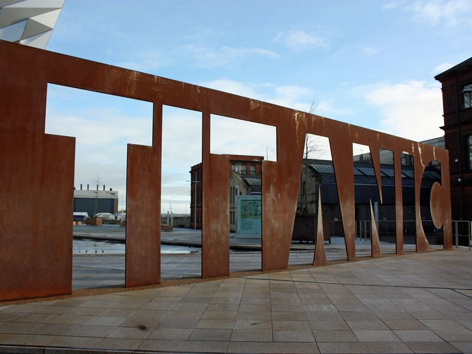
Titanic Belfast
A state-of-the-art visitor experience that tells the story of the RMS Titanic, from her conception in Belfast to her fateful maiden voyage and legacy. The site forms part of Titanic Belfast's documented civic and cultural landscape within Belfast, with archives and visitor information available from municipal or regional heritage authorities.
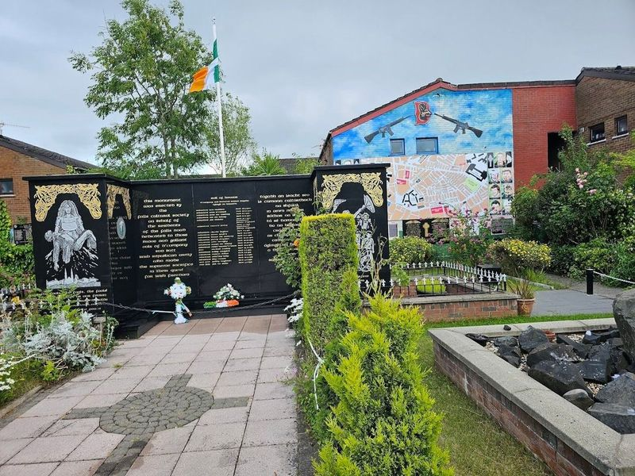
Peace Wall Belfast
The Peace Wall in Belfast stands as a poignant reminder of the city's tumultuous past, originally erected to help quell the Northern Irish conflict. This remarkable structure has transformed into an open-air gallery adorned with vibrant murals that reflect the stories and sentiments of both nationalist and unionist communities.
Stormont Estate
Stormont Estate, located in Northern Ireland, is a picturesque and historic site surrounding the Northern Ireland Assembly parliament. The estate boasts beautiful gardens, parks, trails, and statues that make it an ideal destination for a romantic afternoon stroll or a leisurely outdoor adventure. It has been recognized with a Green Flag Award for its prestigious woodland park in east Belfast.
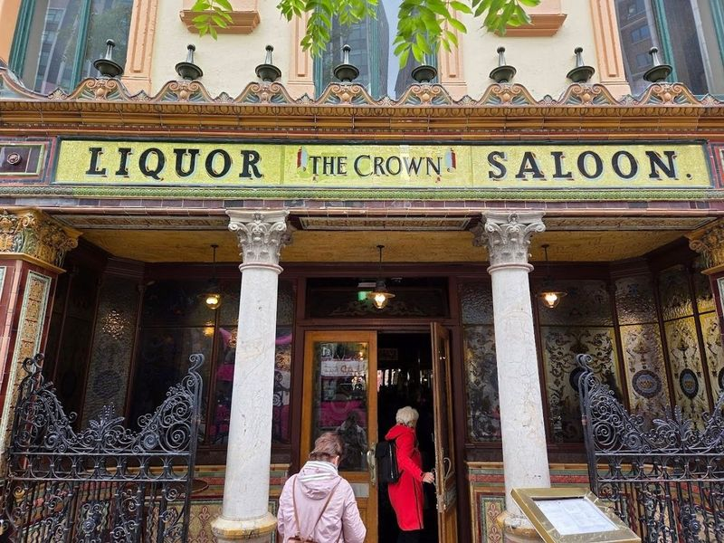
The Crown Liquor Saloon
The Crown Liquor Saloon, built in the 1880s, is a renowned pub in Belfast known for its Victorian and Baroque interiors. The exterior boasts a multi-colored tiled facade with a distinctive crown motif at the entrance. Inside, visitors can admire the ornate red granite bar, intricate mosaic tiles, stained glass windows, and detailed woodwork. The pub's historic significance is further enhanced by its appearance in various films over the years.
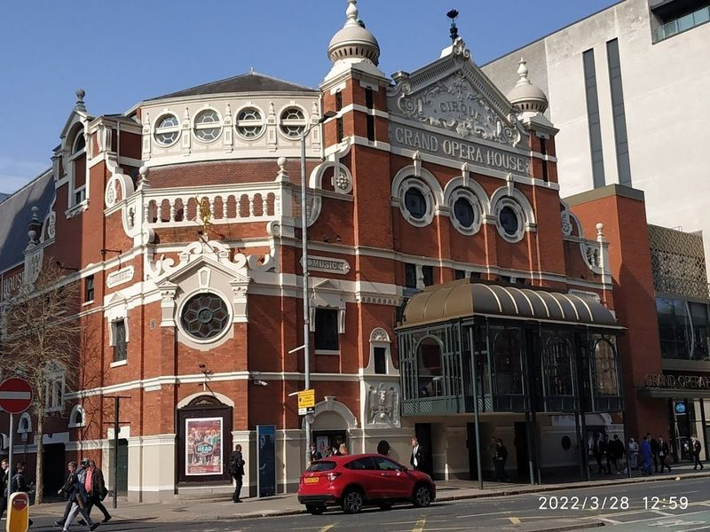
Grand Opera House
The Grand Opera House in Belfast is a testament to the city's rich cultural heritage, having undergone an impressive restoration that celebrates its 1895 origins. Recently revitalized with a $12 million facelift just in time for its 125th anniversary, this venue now boasts a beautifully restored auditorium adorned with intricate plasterwork and ornate boxes.
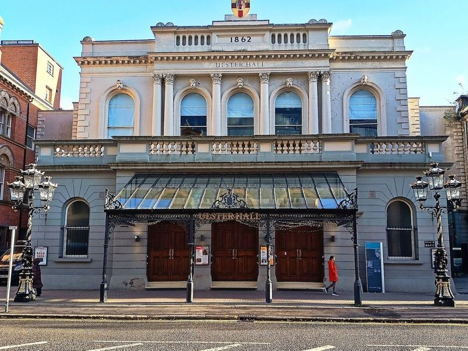
Ulster Hall
Ulster Hall, a grand Victorian music hall in Belfast, has been a prominent part of the city's music scene for 150 years. From orchestral performances to rock concerts, this venue offers a diverse lineup of events. Notable acts such as Led Zeppelin and All Time Low have graced its stage, and it continues to host renowned artists like Mitski and Passenger. The Ulster Orchestra also holds regular concerts here.
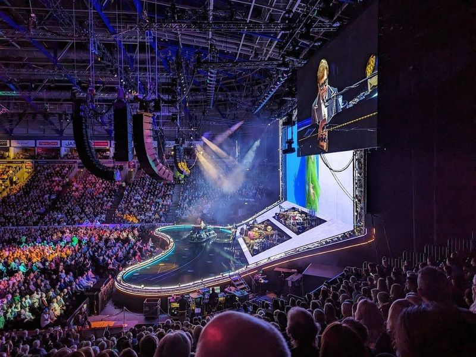
The SSE Arena Belfast
The SSE Arena Belfast is a versatile indoor stadium with a seating capacity of 10,000. Located within the Titanic Quarter, it is a prime venue for various events including ice-hockey matches, ice shows, music concerts, and comedy events. It serves as the home stadium for the Belfast Giants ice hockey team and has hosted renowned music artists like Shania Twain, Bryan Adams, and Westlife.
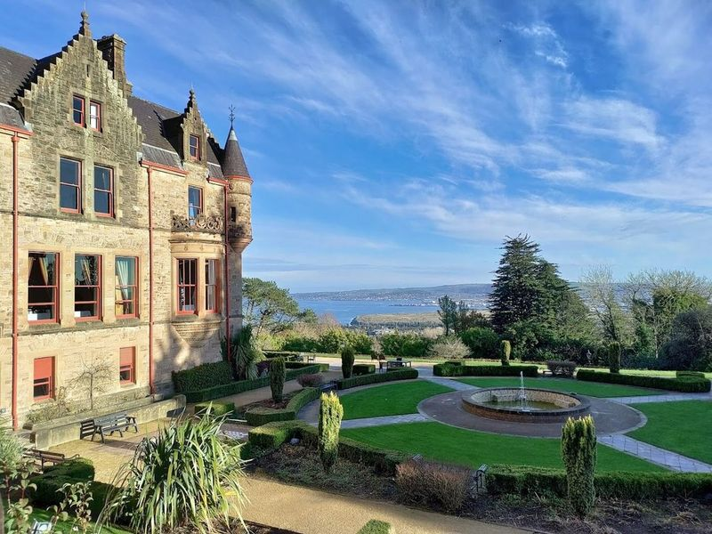
Belfast Castle
Belfast Castle, located within Cave Hill Country Park, offers a fairytale-like setting with its impressive Scottish Baronial style architecture and conical roof towers. While the interior is reserved for events, visitors can still enjoy the adventure playground, antiques shop, restaurant, and visitor center. The castle's courtyard features a refreshing fountain and beautiful gardens that provide tranquility and views of the city.
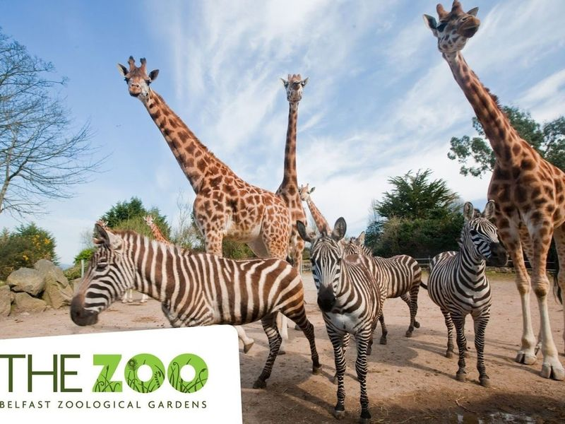
Belfast Zoo
Belfast Zoo, located in Northern Ireland, is a renowned visitor attraction with over 300,000 annual visitors. It houses more than 1,000 animals and 140 species, many of which are endangered. The zoo features popular attractions such as Asian elephants, giraffes, sea lions, penguins, apes, tapirs and tigers. Additionally, it offers a walk-through rainforest exhibit showcasing rare tropical plants and animals like sloths and fruit bats.
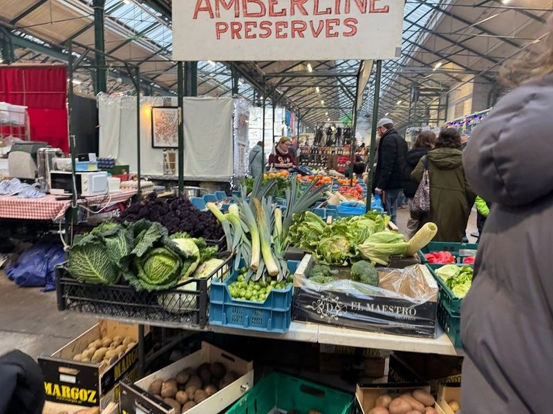
St George's Market
St George's Market is a vibrant and historic destination in Belfast, operating from Friday to Sunday. This colorful 19th-century market stands as the last remaining Victorian covered market in the city, showcasing an array of offerings including fresh fruits, flowers, fish, fashion items, and unique crafts. Food enthusiasts will find their paradise here on Saturdays during the City Food and Craft Market hours from 9 am to 3 pm.
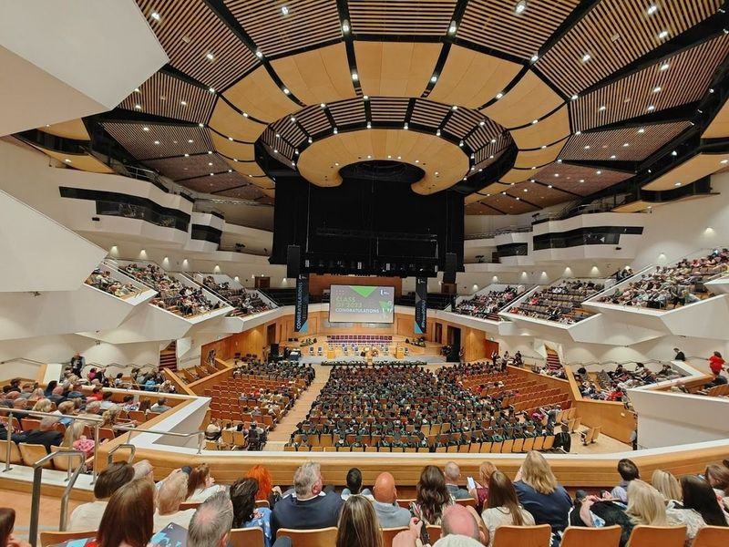
Waterfront Hall
Waterfront Hall is a versatile and contemporary venue in Belfast, known for hosting a wide range of events including music, opera, comedy shows, and the annual Northern Ireland Open snooker tournament. Since its opening in 1997, it has welcomed renowned figures like Barack and Michelle Obama. The venue's 350-seat studio regularly presents operas, ballets, pantomimes, and musicals.
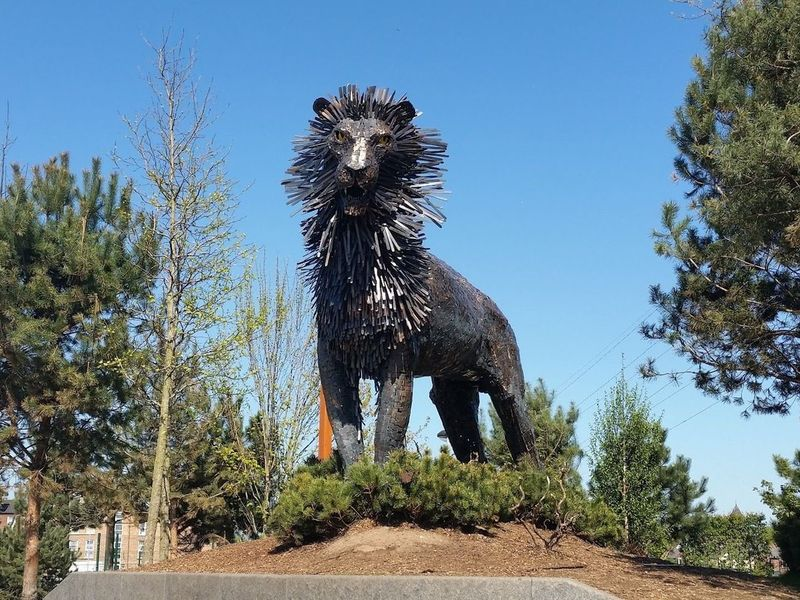
CS Lewis Square
Nestled just off Newtownards Road in East Belfast, CS Lewis Square is a delightful plaza that brings the enchanting world of 'The Lion, the Witch and the Wardrobe' to life. This charming space features seven bronze sculptures depicting beloved characters like Aslan and Mr. Tumnus, making it a dream destination for photographers and fans alike.
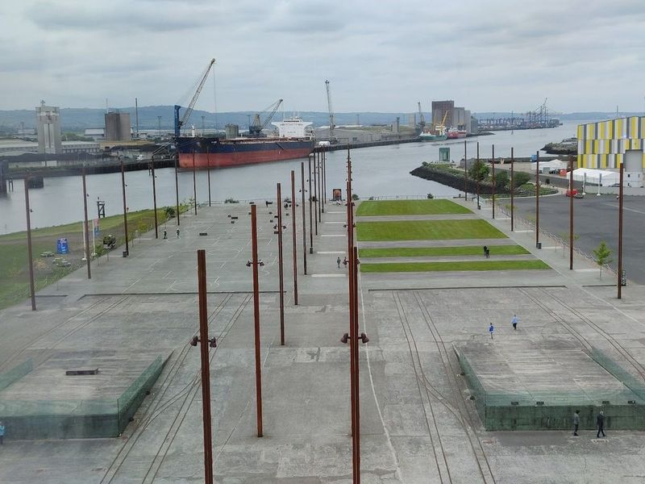
Belfast city hall
When exploring the vibrant city of Belfast, a stay near Belfast City Hall can enhance your experience significantly. Many travelers suggest considering accommodations like easyHotel Belfast, Leonardo Hotel Belfast, and Travelodge Belfast. These hotels are praised for their prime locations and attentive service, making them ideal choices for those looking to immerse themselves in the heart of the city while enjoying convenient access to local attractions.
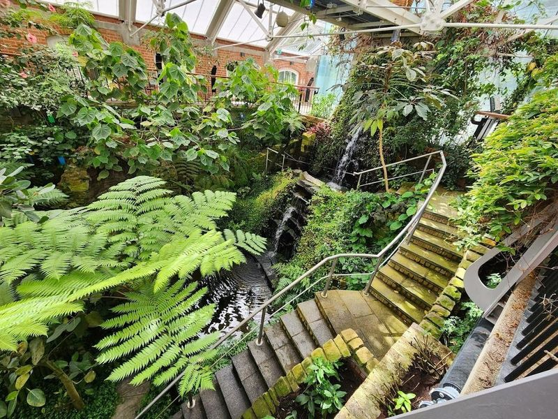
Botanic Gardens
Botanic Gardens, established in 1828, is a picturesque public garden in Belfast. The gardens boast a diverse collection of tropical plant species and an impressive domed conservatory. It spans 28 acres and offers a blend of horticultural wonders and open spaces for leisurely strolls. Throughout the year, the gardens host various events including festivals and concerts. Additionally, visitors can relax at the on-site café which is also ideal for studying or simply enjoying a change of scenery.
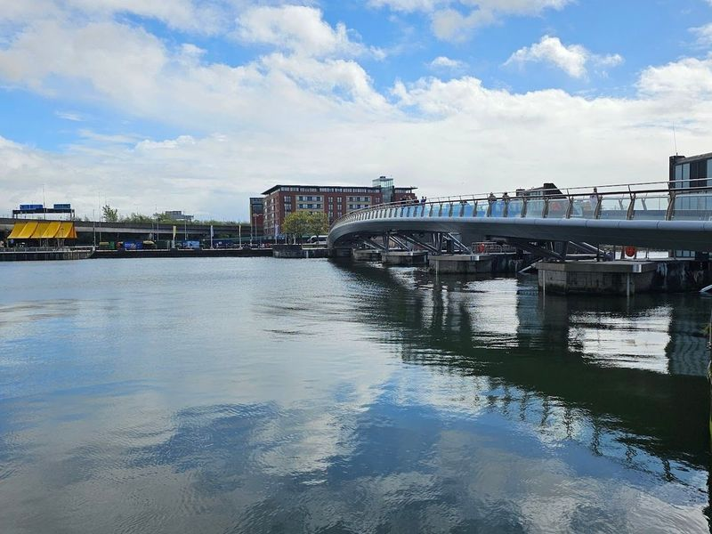
The Salmon of Knowledge
The Big Fish, also known as the Salmon of Knowledge, is a famous ceramic sculpture located in Belfast. Created by artist John Kindness and installed in 1999, this 10-meter sculpture has become an symbol of the city's regeneration along the River Lagan. The outer scales of the fish are adorned with intricate mosaics that depict Belfast's history and spirit, making it a popular spot for photography enthusiasts.
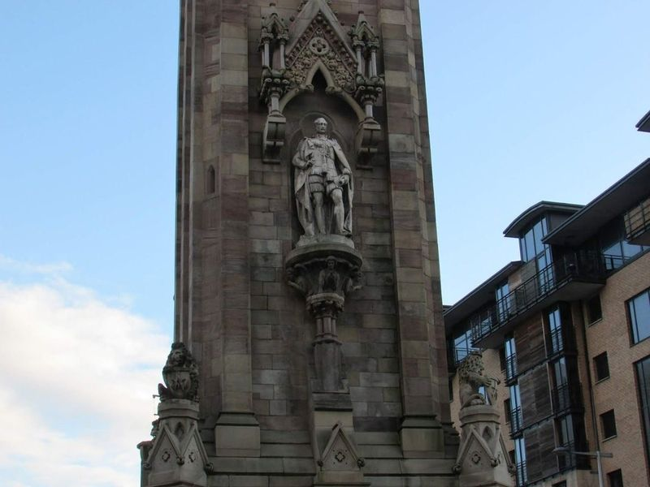
Albert Memorial Clock
The Albert Memorial Clock, built in the 1860s to honor Prince Albert, stands as one of Belfast's most landmarks. This elegant structure combines French and Italian Gothic styles and features a statue of the prince. The clock is often compared to the Leaning Tower of Pisa, but it's the fountains beneath it that offer a striking photo opportunity from April to October. Designed by William J.
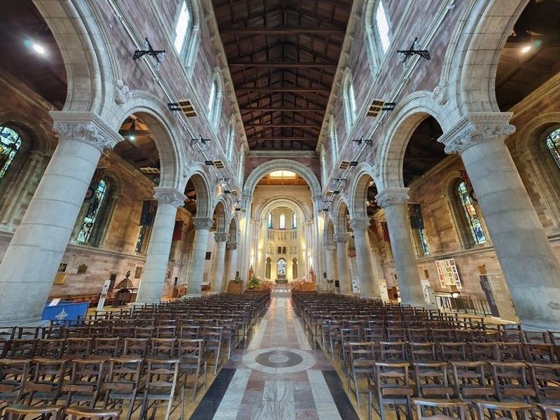
Belfast Cathedral, Church of Ireland Cathedral Church of St Anne
Belfast Cathedral, also known as St Anne's Cathedral, is a significant Anglican church in the heart of Belfast. Built in 1895 and consecrated in 1904, this Romanesque-style edifice features semi-circular arches and stained glass windows. It serves as the seat for both the Bishop of Connor and the Bishop of Down and Dromore.
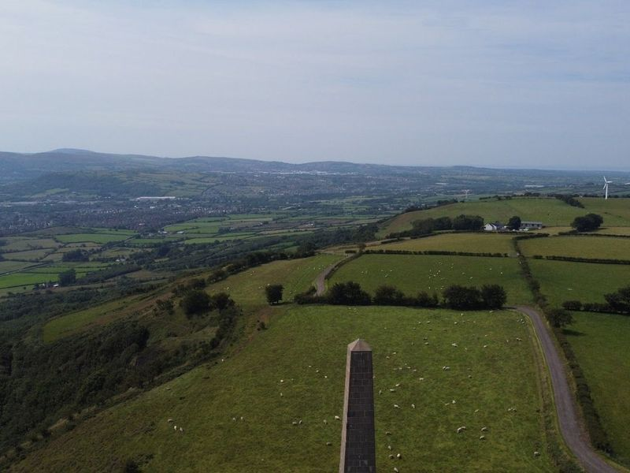
Knockagh Monument
Knockagh Monument, standing at 34m (110 feet) tall, is a striking war memorial in Northern Ireland. It honors the County Antrim men who bravely gave their lives during WWI and WW2. Positioned on a hill overlooking Carrickfergus, the monument's commanding presence can be seen from miles away. Accessible via a narrow lane and twisty road, it offers a small free car park and information boards detailing its history.